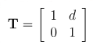
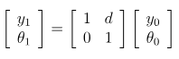
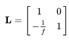

Day 19: Twinkle, Twinkle Little Star
If you're tracing rays or transforming coordinates, you could be using PDL!
A little knowledge is a dangerous thing. Having seen how to do matrix multiplication on 16 December, the Elf R&D department, headed by Rudolf and Dancer, decided to calculate the sparkle from their baubles. In optics, tracing light rays through bits of glass that act as mirrors and lenses can be done by working through a series of equations or by multiplying matrices and vectors!
If a ray at height y and angle θ, travels a distance d, where does it end up? Using vector multiplication with this matrix,
 gives you a resultant vector like this

What happens when the ray hits a thin lens, focal length f?

Nice, but what's the big deal?
Well, these things stack. The end of one light ray path is the beginning of the next. You follow the path from element to element until you get to the end of your optical system. Even better, the calculation in PDL is in the same order as the written mathematics; start with the vector on the right and work through the elements in the path from right to left in the code.
 figure from Fujiwara and Cordeiro
figure from Fujiwara and Cordeiro
What's that, Blitzen? How does that look in PDL?
Well, given values for the distances $d0 .. $d4, and focal lengths $f1 .. $f4
$ab = [1,0] # shortcuts for defining elements
$cd = [0,1]
$T0 = pdl([1, $d0], $cd)
$L1 = pdl($ab, [-1/$f1, 1])
$T1 = pdl([1, $d1], $cd)
$L2 = pdl($ab, [-1/$f2, 1])
$T2 = pdl([1, $d2], $cd)
$L3 = pdl($ab, [-1/$f3, 1])
$T3 = pdl([1, $d3], $cd)
$L4 = pdl($ab, [-1/$f4, 1])
$T4 = pdl([1, $d4], $cd)
$y_theta0 = pdl($y0, $th0)
$y_theta9 = $T4 x $L4 x $T3 x $L3 x $T2 x $L2 x $T1 x $L1 x $T0 x $y_theta0
The only calculation is that one last line. The rest are all defining the system.
This makes it easy to add elements and even compute a single Ray Transfer Matrix for the whole system.
It will be faster than Perl when it comes to iterating over a million vectors.
Being PDL, there's nothing stopping you from constructing a $y_theta0 ndarray with all your vectors
and computing the set of transformed vectors in a single line of code. (I haven't tested that yet)
This, of course, is the Ideal Situation. Back in Reality, the elves will need to check that light rays don't go outside the diameter of the lenses in the middle of the system. Santa is very rooted in the Real World and takes a dim view of unphysical results.
We're not limited to these two basic matrices. Here are four more formulae for optical elements which show mirrors as well as a lens with a changing index of refraction.
![ABCD matrices of some optical elements [18].](https://www.researchgate.net/publication/365741941/figure/tbl1/AS:11431281108346700@1671470398979/ABCD-matrices-of-some-optical-elements-18.png)
And Wikipedia also has prisms.
There already is a Perl module that adds optical elements for you called Physics::RayTransfer (Hi, Joel! also author of PDL::Util ). It has a nice Object Oriented interface, but it doesn't use PDL, so if you've got a script that runs for a long time maybe adding PDL ndarrays to the attributes will give you that speed up you're looking for.
Wow, Rudolph! Calculating refractions hasn't been this much fun since 1021 CE!
Green laser reflection and refraction 2 by astroshots42 is licensed under CC BY 2.0

Boyd Duffee
Boyd has wanted to learn PDL for many years and realizing that dream is bringing him joy. He has done mad things to Complex Networks with NLP and is moving on to DSP and Time Series Analysis. He's interested in Data Science, Complex Networks and walks in the woods.